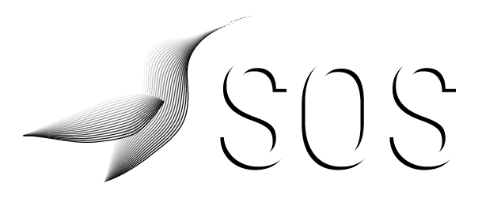

<div [ngClass]="isOpen === true ? 'responsive' : 'topnav'" class="topnav bgHardBlue" id="myTopnav">

    <a class = "logo cursorPointer" routerLink="homeVisiteur"></a>
    <span class="linkMenu">
        <a routerLink="contact" class="categorie robotoLight">Contact</a>
        <a routerLink="team" class="categorie robotoLight">Team</a>
        <a routerLink="tutorial" class="categorie robotoLight">Tutorial</a>
        <a routerLink="faq" class="categorie robotoLight">FAQ</a>
    </span>
    <span class="logMenu">
        <a routerLink="login" class="categorie robotoLight logMenu">Login</a>
        <a routerLink="signUp" class="categorie robotoLight logMenu">Sign Up</a>
    </span>
    <a class="icon" (click)="switchIsOpen();">
        <i class="hamburger">

            <span></span>
            <span></span>
            <span></span>

        </i>
    </a>
</div>

<router-outlet></router-outlet>
